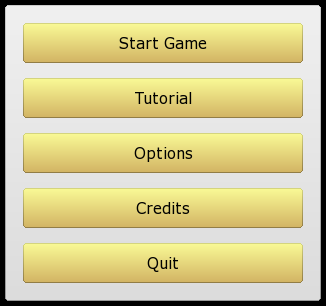
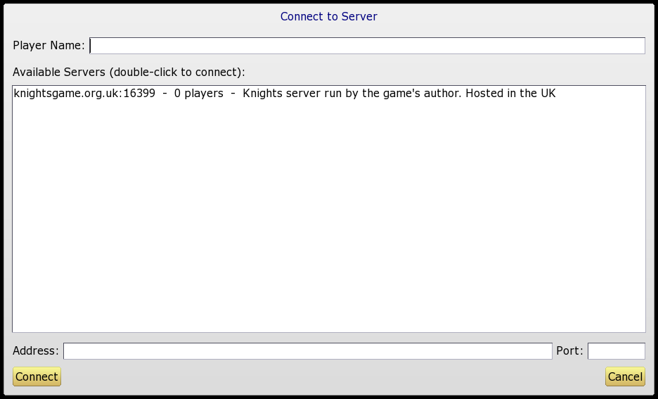
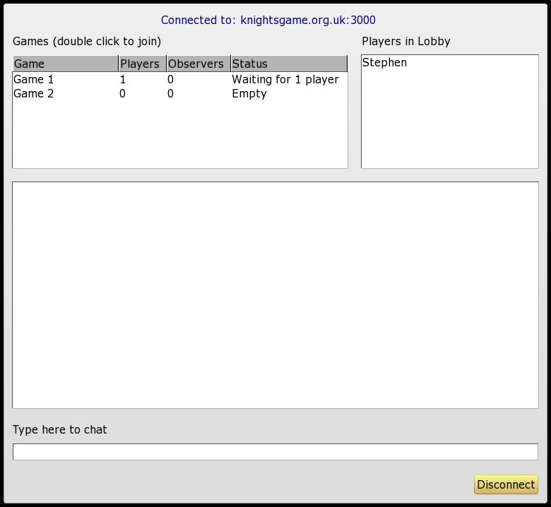

When the game starts you are presented with the above menu screen.
Start Game takes you to a sub-menu where you can start various types of games. See below for details.
Tutorial lets you play through a short tutorial which will explain the basics of the game. Although the tutorial does not cover all aspects of the game, it should give you enough information to get started.
Options allows you to adjust knight controls and graphics settings. See Game Options for details.
Finally, Credits allows you to see who is responsible for this software, and Quit exits the game.
After selecting Start Game you will need to select one of the following options:
This allows you to connect to a Knights server and play online. You will be taken to the following screen:

This lists all Knights servers currently active on the Internet and shows how many players are connected to each one. To connect, type the name you wish to be known by into the Player Name box, and then double click on one of the servers.
After connecting you will be taken to a lobby screen:

Here you can chat with other players or join a game of Knights. A server can be running more than one game at a time; the available games are listed at the top left. Double click on a game to join. Once a player joins a game, a new empty game will be automatically created.
Please note that all usage of a Knights server (including chat messages) may be recorded in the server logs. If you do not agree to this then please do not connect.
It is possible to observe a game, without actually joining in. To do this, first join the game as normal, then click the "Observe" button at the bottom right of the Quest Selection screen.
Alternatively, if you join a game that has already started, you will automatically join as an observer. (It is not currently possible to enter a game half-way through; you must wait until the next game starts if you wish to play).
If nobody is online, you can minimize the Knights window (while on the main lobby screen – not the Quest Selection screen) and the window will automatically pop up again when someone connects. This allows you to do something else while waiting for someone to show up. (You can set Knights to run in windowed mode from the Options screen.)
NOTE: Currently the auto pop-up only works on Windows. (I couldn't get it working in Linux; if anyone knows how to programatically pop up windows in Linux, please contact me! I tried XRaiseWindow but it didn't seem to work.)
These options allow you to play Knights over a LAN. The first player should select Host LAN Game, and the remaining players should select Join LAN Game. For the "joining" players, a list of all Knights games found on the local network will be displayed; double click on one to connect.
LAN games use UDP port numbers 16398 and 16399, so if you can't connect, check your firewall settings to make sure that nothing is blocking those ports.
If you join a LAN game half-way through, then you will become an observer. See "Observing" above.
Note that in the LAN mode, if the host player quits the game, then all other players will be automatically disconnected.
This option allows two players to play the game using a single computer. One player takes the left half of the screen, and the other the right half. This works best if you use a piece of cardboard or other divider to make sure that players cannot see what is happening on the other player's screen. (This really does improve the game – it is no fun being invisible if your opponent can just look over at your screen to see what you are doing!)
The split screen mode is limited to two players only. To play with three or more players, you must set up a LAN or Internet game.
Also note that only the "old" control system can be used in split screen games. For more about control systems, see Controls.
This allows you to play a quest alone, with no opposition from other knights (although the vampire bats and zombies will still try to stop you). This is useful as a "practice mode" or for experimenting with various quests. Alternatively, you can set a time limit and try to complete quests against the clock.
If you want to play a game across the Internet, but don't want to use the official Knights server (for whatever reason), then you could try one of the following: